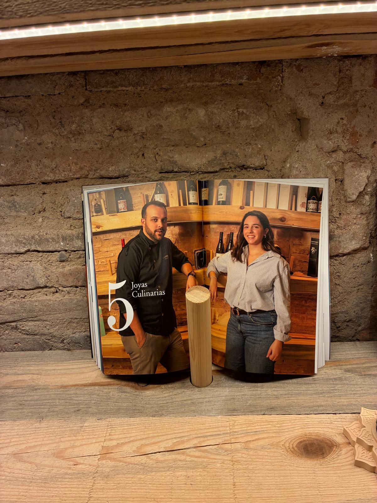
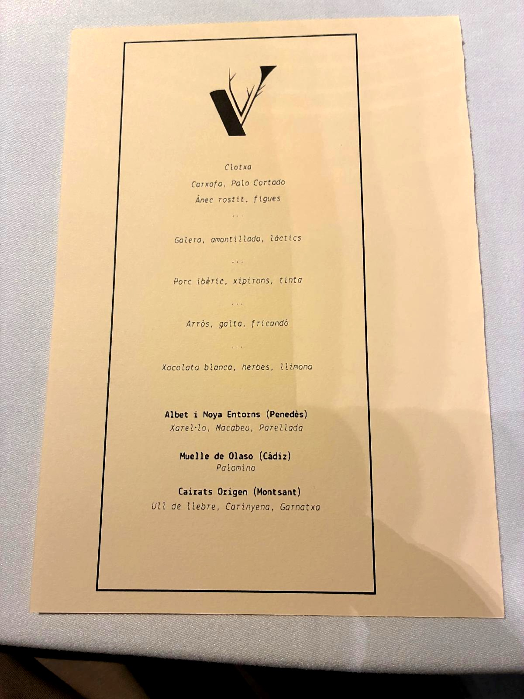
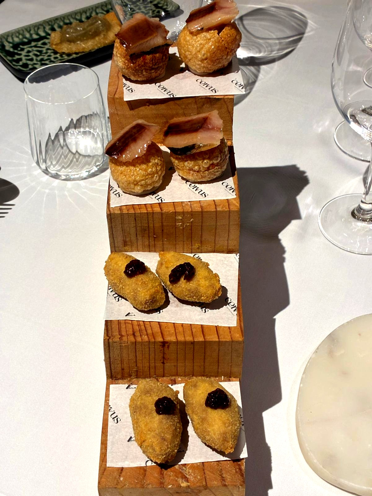
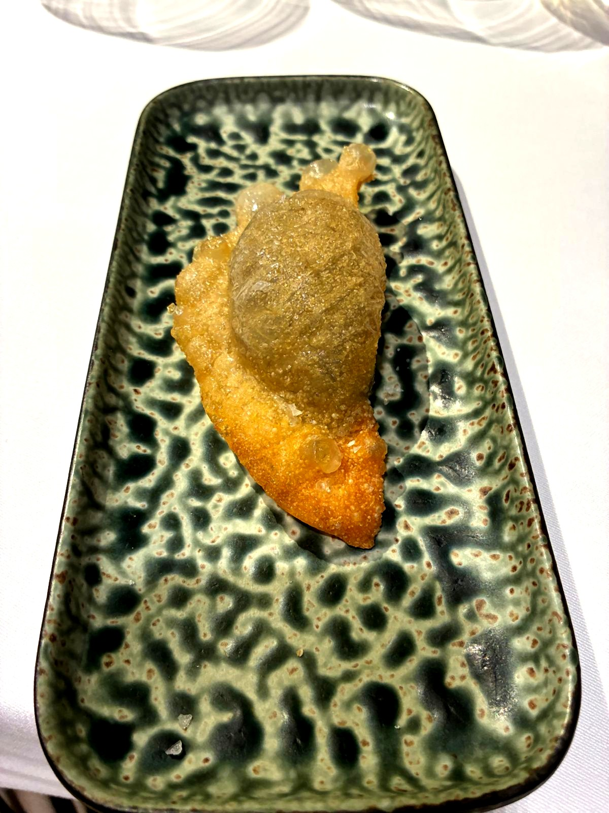
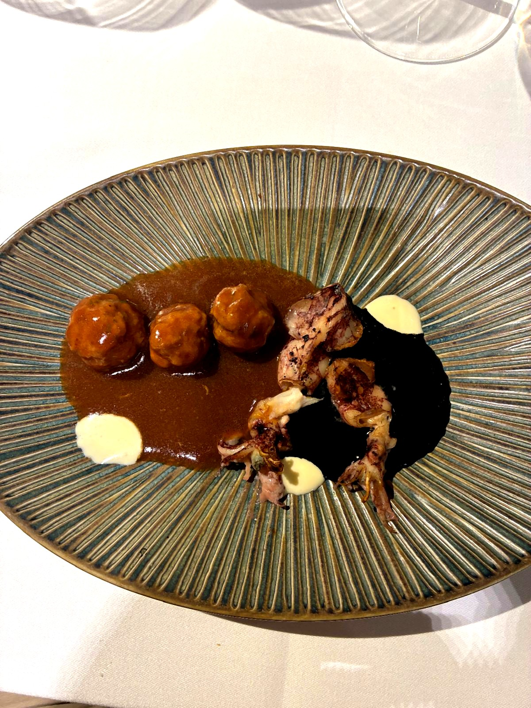
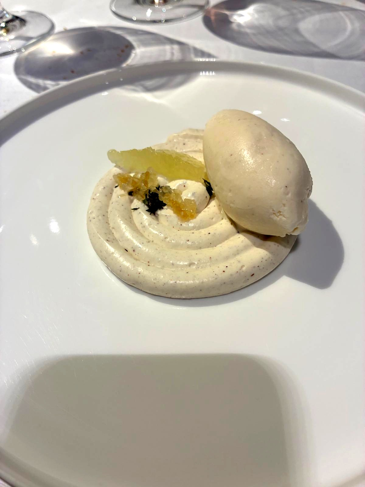
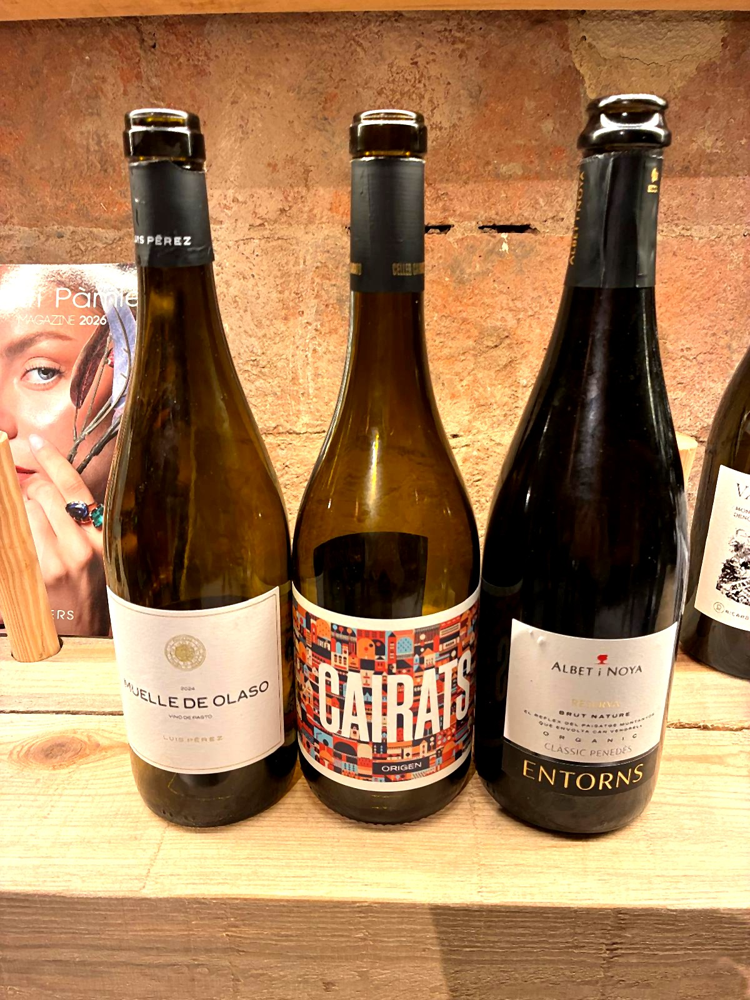
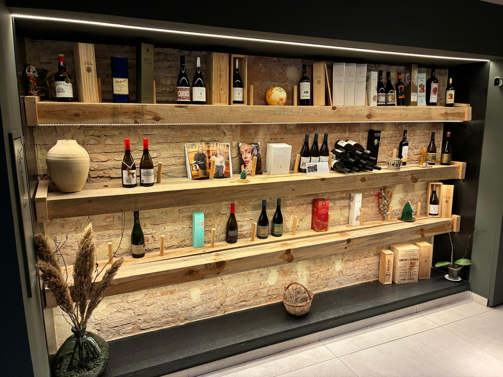
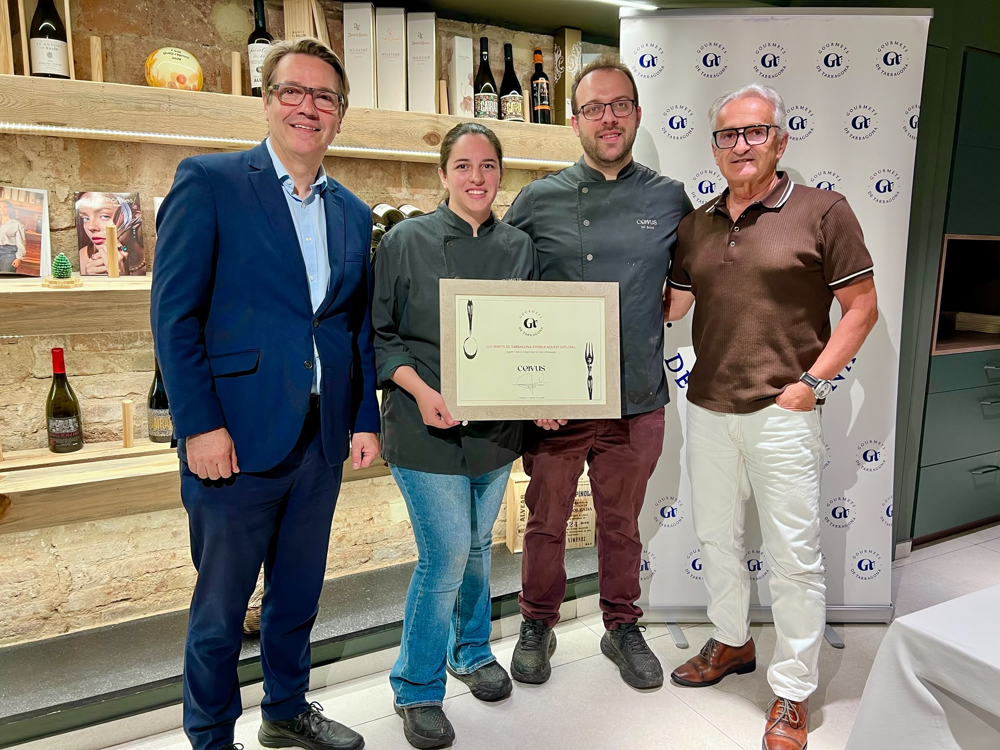

Cervus no necesita gritar
Cervus no es un restaurante que llame la atención desde la calle. Pero cuando se abre la puerta y aparece aquella sala austera, de paredes oscuras y luz contenida, con la cocina vista al fondo como si fuera el escenario de un teatro pequeño, ya se entiende que aquí pasa algo diferente. Reus, que lleva tiempo demostrando que tiene mucho más que decir gastronómicamente de lo que a menudo se le reconoce, tiene en Nil Bono y Lucía Fernández dos cocineros que trabajan con la seriedad y la delicadeza de los que no necesitan gritar para hacerse escuchar.
La visita de los Gourmets de Tarragona al Cervus fue, por cuestiones de aforo, una visita doble: dos noches, dos grupos, un mismo menú. El restaurante, en un gesto que dice mucho de su carácter, se ofreció sin dudar a doblar la jornada para acoger a todos los socios. Un detalle que no pasó desapercibido.



El rebujito que no era rebujito
La noche arrancó con una sorpresa: una reinterpretación del rebujito traída al territorio. Vermut de Reus y oloroso, servidos juntos con una elegancia discreta. Lo que en Andalucía es fiesta y bullicio, aquí se convertía en bienvenida civilizada, un guiño de complicidad entre culturas que puso a todos de buen humor desde el primer momento.
Nil Bono escribe sus minutas como poemas breves: tres palabras por plato, ningún adorno innecesario. Y la cocina, después, es exactamente así.
El inicio del paseTres bocados, tres maneras de decir de dónde vienes
Los aperitivos llegaron en una estructura de madera escalonada que ya anunciaba el sentido estético de la casa: clotxa —un plato tradicional hecho con pan redondo—, alcachofa con Palo Cortado y pato asado con higos. Tres bocados, tres maneras de decir de dónde vienes.


Galera, amontillado, lácteos
El primer plato fue la galera con amontillado y lácteos: un bol de color ocre intenso, con la galera —aquel crustáceo injustamente relegado a los caldos de mercado y raramente elevado a protagonista— en primer plano, acompañada de notas de hinojo que aportaban una frescura inesperada. La incorporación del amontillado sumaba una profundidad umami que levantó comentarios en la mesa.

Galera, amontillado y lácteos — la galera como protagonista, con notas de hinojo y una profundidad umami notable
Segundo platoCerdo ibérico, chipirones, tinta
Continuó el cerdo ibérico, chipirones y tinta: un plato de dos mundos que se encuentran sin imponerse el uno al otro. Las albóndigas de cerdo ibérico en su salsa morena y los chipirones sobre fondo de tinta, con aquellos puntos de alioli que actuaban como contrapunto graso y goloso. Visualmente impactante, sabiamente equilibrado.

Cerdo ibérico, chipirones y tinta — las albóndigas en salsa morena y los chipirones sobre tinta, con puntos de alioli
El plato de la nocheArroz, fricandó de carrilleras
El arroz, mejilla y fricandó fue el momento de máxima intensidad de la noche. Un arroz meloso —ni caldoso ni seco— con mejilla de cerdo y fricandó de carrilleras, acompañado de patatas fritas, coronado por una galleta calada como un rosetón gótico que parecía salida de un taller de orfebrería. El tipo de plato que recuerda por qué el arroz es mucho más que un ingrediente cuando se trata con respeto.

Arroz y fricandó de carrilleras — meloso, con patatas fritas y la galleta calada como firma visual del plato
El cierreChocolate blanco, hierbas, limón
El postre, chocolate blanco, hierbas y limón, cerró el círculo con una elegancia ligera: una crema espiralada sobre la que reposaba un sorbete inmaculado, con pequeños fragmentos de limón confitado y hierbas. Fresco, limpio, sin endulzar el final innecesariamente.

Chocolate blanco, hierbas y limón — crema espiralada, sorbete y limón confitado. Un final fresco y sin excesos
De Cádiz al Montsant, pasando por el Penedès
La selección vinícola corrió a cargo de la casa con un criterio que merece mención. Tres vinos, tres territorios, un hilo conductor claro: honestidad y maridaje pensado plato a plato.
Aperitivos · Galera
Muelle de Olaso
Palomino · Luis Pérez · Cádiz
Cerdo · Arroz
Cairats Origen
Ull de llebre, Carinyena, Garnatxa · Montsant
Postre
Albet i Noya Entorns
Xarel·lo, Macabeu, Parellada · Penedès


El diploma de los Gourmets
La segunda noche tuvo un momento especial: la entrega del diploma de los Gourmets de Tarragona a Nil Bono y Lucía Fernández. Carles Just, socio de la asociación, y Juan Manuel Rodríguez Yarritu, presidente, hicieron entrega del reconocimiento a una pareja de cocineros que lo recibió con la misma discreción con la que cocinan: sin estridencias, con una sonrisa sincera y el orgullo bien contenido de quien sabe que el trabajo bien hecho acaba siempre hablando solo.

De izq. a dcha.: Carles Just (socio), Lucía Fernández, Nil Bono y Juan Manuel Rodríguez Yarritu (presidente) · Cervus · Junio 2026
Nuestra miradaReus tiene lo que tiene
Cervus es el tipo de restaurante que te hace agradecer que Reus tenga lo que tiene. Una cocina sin imposturas, ejecutada con oficio y sensibilidad, que sitúa el producto del territorio en el centro sin renunciar a la técnica. Nil Bono y Lucía Fernández llevan dieciocho meses abiertos —con el Sol Repsol llegando ya a los catorce— y se nota que no les pesa: siguen cocinando como si cada noche fuera la primera vez que tienen que demostrar algo.
Hay algo en Cervus que va más allá del producto o la técnica: una conversación entre Cataluña y Andalucía que se percibe en cada pase. El rebujito de vermut de Reus y oloroso que abre la noche lo dice sin necesidad de explicaciones. Las albóndigas de cerdo ibérico junto a los chipirones en tinta lo confirman. No es fusión en el sentido de mezcla forzada: es la suma natural de dos culturas gastronómicas que, cuando se entienden bien, se potencian mutuamente. Reus como punto de encuentro. El Camp de Tarragona como escenario.
La valoración definitiva llegará en la Gala de finales de año, cuando los socios expresen su voto. Pero el veredicto de las dos veladas fue claro: ningún plato decepcionó, la sala estuvo atenta en todo momento, y los Gourmets de Tarragona salieron de Reus con la satisfacción de quien ha descubierto que una ciudad a diez minutos de casa puede sorprenderte todavía.
Newsletter
¿Quieres recibir la próxima crónica antes que nadie?
Crónicas de los restaurantes visitados, vinos recomendados y novedades del Camp de Tarragona. Una vez al mes, sin ruido.
Sin spam · Baja cuando quieras.